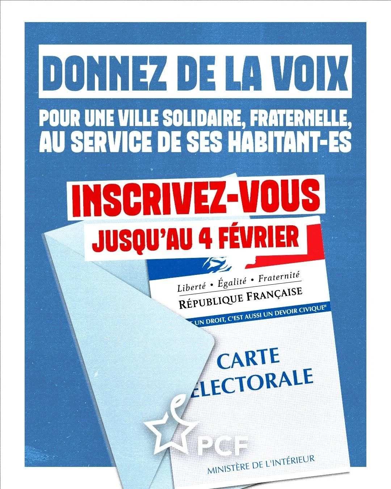

Annonce du PCF national
Municipales 2026. Les dates d’inscription sur les listes électorales
Date de mise à jour indiquée par Facebook · 16 janvier 2026
Repères éditoriaux
Pour les municipales de mars 2026, le PCF avait appelé à s’inscrire sur les listes électorales. L’échéance du 4 février concernait les démarches en ligne. Les inscriptions en mairie étaient possibles jusqu’au 6 février, hors cas particuliers.
Texte de la publication · PCF national
Pour décider de l’avenir de votre commune, de vos services publics locaux et faire vivre la démocratie donnez de la voix !
Inscrivez vous sur les listes électorales avant le 4 février !
Les élections municipales approchent et il est encore possible de s'inscrire pour voter, rendez-vous en ligne, lien en commentaires.

Sources
PCF national · publication relayée par le PCF 79 · bibliothèque Facebook · AR-0002-FB-00903
À lire aussi · Niort à gauche. Six rencontres citoyennes en janvier 2026